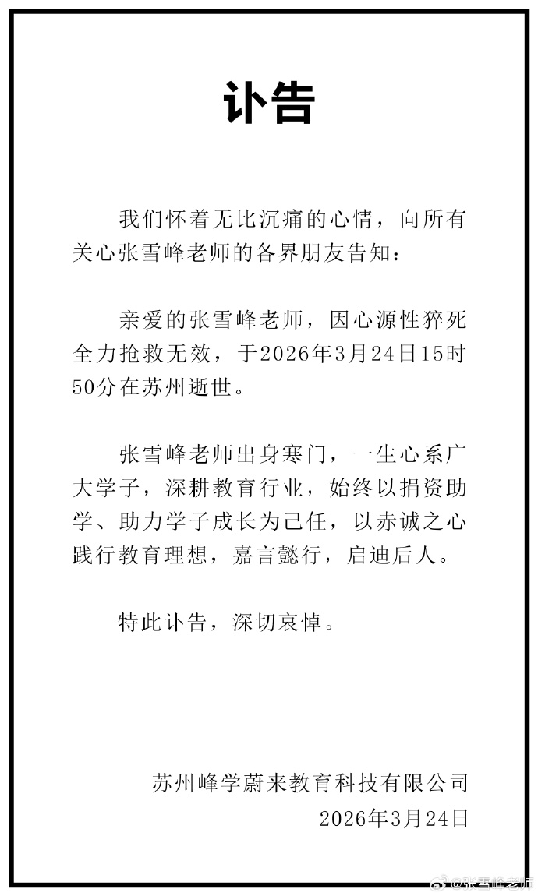

处于尊重，先对张雪峰老师的离世表示深切哀悼，无论有什么争执，生命的逝去都值得尊重与哀悼！也向他的家人和商业团队致以慰问。

高考几乎是普通孩子成功的唯一机会，这是不可否认的，有很多人通过高考走出农村，甚至走出中国。毋庸置疑高考也为国家提供更多的人才，助力中华民族的伟大复兴，因此我们可以把高考看作国家的人才培养计划，激励学生相互竞争，进入更好的学府学习自己想学的专业，最后投入社会。
相对应的，有竞争就会有焦虑，教育的出现让资本家闻到了商机，所谓的民办“教育”机构就会出现，张雪峰团队便是其中之一。起初张雪峰并不出名，工作以宣讲和辅导志愿填报为主，实话讲他的言语总是振奋人心，激励学生和家长，并没有引发公众的焦虑。
但随之一切发生改变，双减开始之后，几乎所有机构开始对国家政策提出阴谋论，自以为是的普通人开始通过所谓“理性”“缜密”的思考，开始追随这些机构，发表着同样的阴谋论，批判国家政策。显而易见的，机构的根本目的是赚家长的钱，家长的目的是望子成龙。核心逻辑如下：机构精准卡位政策发布的短期时间窗口，利用群众在焦虑状态下的认知盲目性，在将自身风险降至最低的前提下谋取利益，并通过持续的扩散焦虑进一步扩大市场，最终形成“制造焦虑——利益收割——加剧焦虑”的恶性循环。
张雪峰团队便是其中之一，利用志愿报考信息难以总结的弊端，去制造焦虑并谋得财富与声望，在公众的眼里这是帮助自己孩子成功，2万元值得花费，孩子看来这是在限制自己的梦想，被家长和张雪峰强行扔进不喜欢的专业。对于国家来说，这是扰乱人才培养计划。遗憾的是群众看不到背后的阴谋，并且总认为自己的孩子跟着张雪峰就能吃到时代的红利，抓住时代的风口，到此为止张雪峰的造神计划已成功，就算是国家也无法扳动他，试想一下，如果国家强行封杀张雪峰会怎么样，引发更多的焦虑，其他企业会分张雪峰这块蛋糕，群众又有了所谓的依靠，国家的公信力严重下滑。这便是国家难以出手的原因，舆论是疯狂的，焦虑下的群众是盲目的。而张雪峰其实没有碰到任何一条法律，没人可以给他扣帽子，这是张雪峰造神计划的可怕之处。
回顾张雪峰商业之路，12亿的年营收，一场直播就能最高2亿，按理来说该收手了，但是团队得陇望蜀，况且到了高台，他根本下不来，因此只能继续宣讲，继续当神。如果他主动退出，那么他的制造焦虑谋财谋名誉的计划将会暴露在公众，所有人都能看清他的计划，因此只有死亡才能给他洗脱，他将会是家长心目中永远的神，是教育商业化中的永恒标杆，以后提起张雪峰大家就不会说他是资本家，而都会说他是一位好老师了。
张雪峰不是一位教育家，而是披着教育外壳下的自私自利者，没有家长想到一件事情，张雪峰从来都是收钱不摊开家长和学生所承受的风险，只告诉你最保守的选择，家长更没想过，让一个郑州大学土木专业的人给你指导志愿，本来能去985选个心意专业的学生被他推荐去双一流选个计算机工程，家长没有静下心想想这是否符合逻辑，而是盲目相信口碑，果断选择追随。最终承担经济风险的是家长，前途风险的是学生，张雪峰坐在顶峰当上帝。
再来看公益方面，虽说公益是可选的，但是作为一位教育家，为公益教育和非公益教育的资金投入少之又少，12亿中只使用0.83%的资金去助学，同行业同收入级别比较来看，张雪峰为教育行业的投入是下游偏少，新东方和小型教育机构的投入量总体在1.5%往上。在同级收入中，他的教育行业投入严重不匹配商业体量，商业模式依然是高收费，低责任，风险全转嫁，公益更像是品牌公关。
此刻需要改变的是家长，家长应该静下心整理历年来高考信息，主动和孩子分析如何填报志愿，分析合适的策略，确定专业优先还是学校优先，考虑孩子的感受，助力孩子的梦想，让孩子走的不后悔那就已经够了。